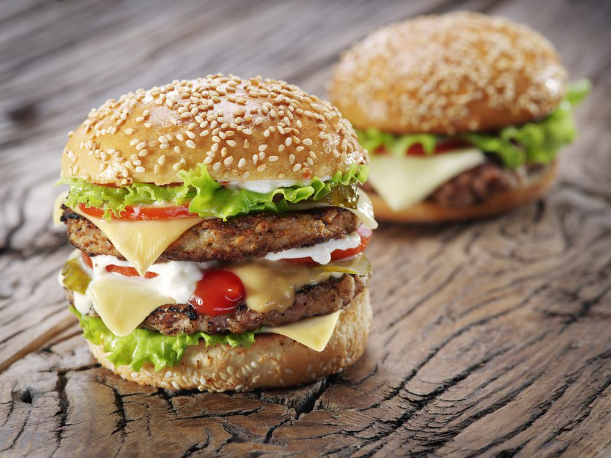

ADRES
Voorstreek 868911JT Leeuwarden
BURGER · SNACK · DONER · LEEUWARDEN
Trek in een burger, kapsalon of Turkse pizza? Ontdek de kaart van Lilian en bestel jouw favorieten eenvoudig online.

ADRES
Voorstreek 86BEL ONS
0647789977OPENINGS- & BEZORGTIJDEN
Volgens de officiële website